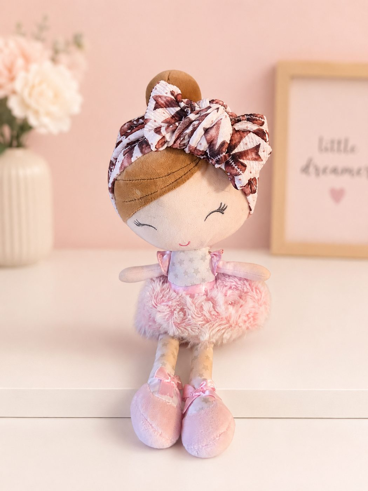

⤢ ZoomGame Day Darling Headband
$14.00
The same russet footballs and little tied bows, on a soft stretch headband for the smallest fan in the house. A textured knit that gives without digging in, tied in a generous bow at the front. Two were made, and that was the whole yard.
Baby headband · newborn size · soft stretch knit · spot clean only. ⚠️ Never leave on a sleeping or unattended baby.
Ships from San Antonio, Texas · shipping & returns · San Antonio local? Choose Local pickup at checkout.
Pairs well with
One shipping fee per order, however much you add — and orders over $50 ship free.